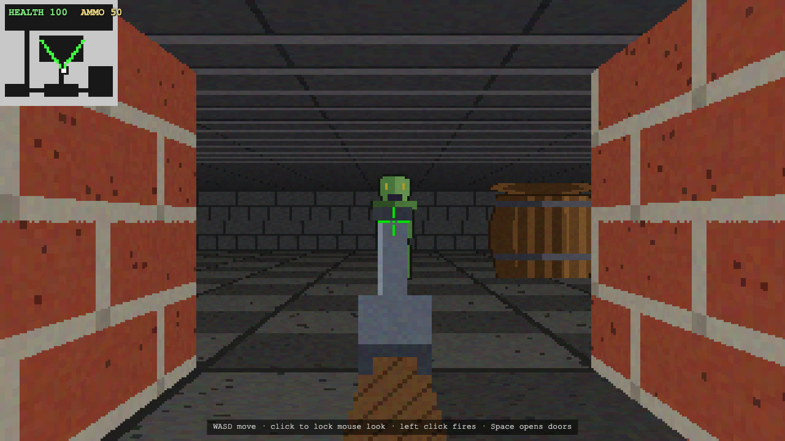

9 November 2026 · Agentic task loop · first-person raycaster
Raycaster Shooter · Sushi 1.5.1 · Tenaz 0.6.0
Tenaz ended in COMPLETE after 6 h 57 min, 48 sessions and 16 tasks, with one configuration and no operator intervention; the final review accepted in its second cycle and 27 model-written checks pass. Played by Claude in a browser: the game runs end to end, both doors open and both enemies fall on the third hit, but the gun hides distant targets, enemies never attack and the game has no end state.

What was checked
- Runner final state COMPLETE on 9 November 05:01:41.422 UTC: 16 tasks done, none pending. Bootstrap produced 14 tasks and 32 requirements on its first attempt. Final review cycle 1 returned CHANGES and added T016 (no barrel visible in the fresh spawn frame); cycle 2 returned ACCEPT with verify passing and all 32 requirements covered, three (R28-R30) by hand. These are the model-written checks and reviews, not a hidden acceptance suite.
- One configuration for the whole run: Tenaz 0.6.0 (fcc7494) built from the public v0.6.0 tag, initialized with --vision and --engine load-api, all Tenaz parameters at their defaults; one Sushi process with one prefix-cache entry. No pauses, no edits to run.json, and no edits to model-written code, notes, checks or task cards.
- Runner events, all handled by Tenaz: T001 attempt 1 failed its browser check because the Playwright browser was not downloaded, and passed on attempt 2; T005 broke the earlier check T004.wall-straight, Tenaz blocked it as a conflict and a replan added T015, after which T005 passed; 037-builder-T006 reached the turn budget (60/40) and a continuation finished the task. Task reviews returned CHANGES twice (T002, T003), each fixed on the next attempt.
- Played on 9 November by Claude with Playwright in headless Chromium against the dev build of the final commit. Keys and clicks were real Playwright input. Headless Chromium cannot take pointer lock, so an init script made the browser report the lock and mouse turns were sent as mousemove events with movementX to the game's own handler. The debug hook was used only to read state.
- Must have results: walking at the coded 3 cells/s with collision at walls; straight walls at an angle; brick, stone and wood textures; textured floor and ceiling; the right-hand corridor wall cutting off part of a barrel; Space opens both doors; left click fires with a muzzle flash and ammo count; each enemy falls on the third hit and stays down. Side and distance shading is visible but was not measured. The hit flash is in the code but was not caught on a captured frame.
- Gameplay faults found in play: the gun reaches the crosshair and hides most of a distant enemy; enemies walk up, stop 0.6 cells away and never attack, so health stays at 100; the fallen enemy is a flat green and purple shape; there is no win or end screen after both enemies fall; the player can snag on a wall corner. Keys work without a first click. The operator's impression: much better than the first run, the gun big and ugly but centred, everything in its place.
- Vision: initialized with --vision. 48 read_image calls across the run, none refused or in error; zero image refusals in the session records.
- Engine metrics: all 973 proxy responses match Sushi summaries one-to-one by (prompt, output, cached) in the single process log; forward-earliest and backward-latest matches agree. 7 Sushi summaries are unassigned and excluded: 6 preflight requests and 1 client disconnect when the turn budget stopped session 037.
- dsh summarized its own context 18 times (side requests with max_tokens 65536). The following request kept at least 80% of its prompt cached in 4 of 18 cases.
- Public artifact: the reviewed static build (vite build --base ./ from the final project commit 3fb0a60, unchanged source) and one capture from it at 1280x720. The prompt is the author's and is not republished; the project, raw logs, journal and sessions stay in the ignored local archive.
Limits of this evidence
Completion is the runner outcome. Same brief, model, engine and harness as the 8 November mixed run, but with the released Tenaz 0.6.0, vision from the start and no pauses, so its figures describe one configuration. It is still a single execution, and the two runs differ in more than one setting. The playthrough was by Claude, with mouse turning driven through simulated pointer lock.
Configuration
The model, serving engine and agent used for this execution.
| Field | Value | Detail |
|---|---|---|
| Model · primary | Qwen 3.8 Flash Next · primary · reasoning medium | EXL3 K=2.625 experts, 8-bit dense weights; 16-bit n-gram table, memory-mapped and read from SSD |
| Checkpoint · primary | Qwen3.8-Flash-Next-Sushi-2.6bpw | primary model artifact |
| Runtime | Sushi 1.5.1 · MLX 0.32.3 · One OpenAI-compatible server process for the whole run, started with the production arguments: KV8, MTP with MTP-head KV quantization, 512-token prefill chunks, 16384 maximum output tokens by default (dsh's context summaries asked for 65536), 20 GB SSD prefix cache with --prefix-cache-entries 1, temperature 0, vision on. All 980 logged generation headers report temperature 0, top-p 0.95, top-k 20 and thinking=true. Startup scanned 8 persisted cache entries (about 19511 MB). mode | inference engine and exact build |
| Harness | DeepSeek Harness over ACP driven by Tenaz 0.6.0 (fcc7494) 0.2.2-rc.1 | the agent or client that drove the run |
| Runner | Tenaz 0.6.0 · release build fcc7494 | open-source runner, github.com/aartiles/tenaz · how the runner evolved |
| Hardware | Apple MacBook Pro · 64 GB unified memory | hardware recorded for this execution |
| Workload | Raycaster Shooter · revision 1 | One-shot raycaster brief by @ddalcu, as posted by @Beamsters1, used verbatim as the Tenaz brief; Tenaz wrote its own verify and task plan. One configuration from start to end, with no pauses or operator changes. A single execution, not a repeated measurement. |
| Context window | 131,072 tokens | maximum context configured for the serving runtime |
| Repetitions | 1 | executions recorded for this workload; one means an indicative result, not an estimate |
Inference measurements
Engine-side rates for this run. Each figure states its own statistic; figures from different runs are not interchangeable.
| Metric | Value | Definition |
|---|---|---|
| TTFT · median | 0.845723 s | Median engine-reported TTFT across matched responses, from engine timing fields retained by the proxy. · n=973 · Mean 3.12 s. |
| Decode · per-request median | 49.8612 tok/s | Median of per-request output_tokens / engine decode_s across matched responses. · n=973 |
| Decode · output-weighted | 47.775 tok/s | Total matched output tokens divided by the sum of engine decode_s. · n=973 |
| Draft acceptance | 66.0631 % | Sum of accepted MTP draft tokens divided by sum of drafted MTP tokens from matched engine request statistics. · n=973 · 596449 accepted / 902847 drafted tokens. |
| Swapped in during the run | 0.75 GiB | Sum of per-session swap-in from Tenaz's 30-second host memory samples, taken during sessions; host-wide swap I/O, not resident memory. · n=867 · Pressure normal or warning; maximum swap occupancy 4.02 GiB. |
| Server process memory · peak | 48 GiB | Maximum sampled Sushi process footprint across Tenaz's 30-second memory samples, taken during sessions, rounded by the sampler. · n=867 |
Agent session counters
Agent-wide usage totals. These include reasoning, tool calls and waiting, and are not model decode speed.
| Metric | Value | Definition |
|---|---|---|
| Run elapsed | 416.7 min | Session 001 start after the preflight (8 November 22:05:00.861 UTC) to COMPLETE (9 November 05:01:41.422 UTC); includes tools, checks and retries. · n=1 · 6 h 56 min 40.6 s; no pauses. |
| Agent sessions | 48 sessions | All harness sessions: 3 bootstrap, 21 builder, 18 reviewer, 4 replan and 2 final reviewer. · n=1 |
| Sessions ended early | 1 sessions | Sessions with ok=false: one turn-budget stop (60/40), finished by a continuation. · n=48 |
| Operator interventions | 0 actions | No pauses, configuration changes or edits during the run. · n=1 |
| Model responses | 973 responses | All proxy request records; every one completed with engine timings and none ended in error. · n=1 |
| Matched model requests | 973 requests | Proxy responses matched one-to-one, monotonically and uniquely to Sushi log summaries by total prompt, output and cached-token triple. · n=1 · Forward-earliest and backward-latest matches agree. 7 engine summaries unassigned: 6 preflight, 1 client disconnect. |
| Tool calls | 1,052 calls | Sum of harness tool_calls across all 48 session records; zero repaired tool calls. · n=48 |
| Context compactions | 0 compactions | Tenaz compaction count across all session records. dsh's own 18 context-summary requests (max_tokens 65536) are counted in model_responses, not here. · n=48 |
Context and token counters
Token totals as reported by the harness or engine. Cached and cumulative figures are not additive with fresh input.
| Metric | Value | Definition |
|---|---|---|
| Maximum prompt context | 51,077 tokens | Maximum prompt input across the matched responses; not the configured server window. · n=973 |
| Cumulative input | 27,471,223 tokens | Sum of total prompt tokens across matched responses, including repeatedly reused context; not unique input. · n=973 |
| Cached input | 25,788,957 tokens | Sum of prompt tokens reported cached for matched responses. · n=973 |
| Fresh input | 1,682,266 tokens | Total prompt input minus cached input for matched responses. · n=973 |
| Output tokens | 1,001,737 tokens | Sum of output tokens across matched responses, including reasoning output. · n=973 |
| of which reasoning output | 673,222 tokens | Sum of reasoning tokens reported by the proxy for matched responses; a subset of output tokens. · n=973 |
| Prompt-cache token share | 93.8763 % | Cached prompt tokens divided by total prompt tokens, weighted by tokens across matched responses. · n=973 · Warm SSD cache at start; not a cold-prefill measurement. |
Recorded check counters
Counts from the checks recorded with this run.
| Metric | Value | Definition |
|---|---|---|
| Tasks completed | 16 tasks | Final task cards marked done, including T015 from a replan and T016 from the first final review; none active, todo or blocked. · n=1 |
| Reviews returning changes | 2 reviews | Task review verdicts returning CHANGES (T002 and T003, first attempts); the other 16 task reviews returned ACCEPT. The first of two final reviews returned CHANGES. · n=18 |
| Project checks passing | 27 checks | Checks passing at the last runner verification before COMPLETE; final reviewer returned ACCEPT. · n=1 · Model-written checks, not an independent acceptance suite. |
Request records & provenance
973 numeric request records, numbered in proxy order, each uniquely matched to a Sushi summary by total prompt, output and cached tokens in one process log. TTFT and decode use engine timing retained by the proxy; MTP counts come from the matched engine statistics. Preflight and client-disconnect summaries are excluded. No prompts, tool results, session identifiers or local paths are included.
Run ID: 2026-11-08-qwen38-flash-next-sushi-v151-26bpw-tenaz-060-dsh-raycaster-shooter
One execution, with checks transcribed from the retained record. A completed session is not a quality score. Measurement method · All runs